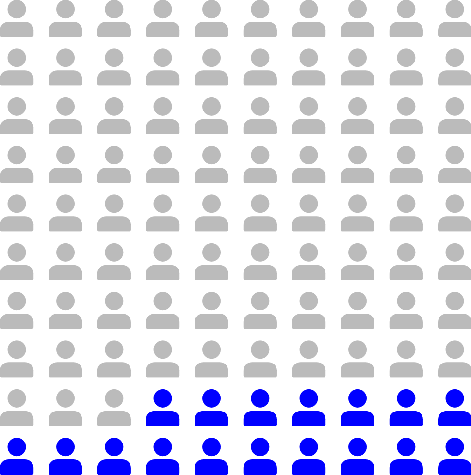
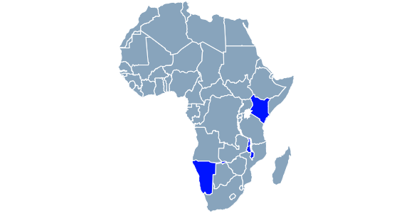

With educational inequality influencing all other kinds of inequality in our world, it has become a pressing issue in the last 20 years. The same few factors have been key causes of this inequality since the industrial revolution: wealth gaps between students, racial discrimination, geographical bias, etc.
However, in the 21st century, technology has risen to be a new factor significantly affecting classrooms. Subsequently, optimism about technology being an equalizer between advantaged and disadvantaged students has also increased. This website aims to find an answer as to how justified these hopes are.
Explore
According to EdTrust-West...[1]

In 2018, around 17 out of 100 children in the U.S. were unable to complete their homework due to limited internet access.
Similarly in California that year, about 1 in 6 school-aged children lacked access to the internet at home and 27% had slow internet.
Technology, or rather the lack thereof, has created inequality among students in a phenomenon known as the digital divide.
According to UNESCO...[2]
Click a country for examples of technology's effects in the classroom!

2.6 billion people -- 32% of the global population -- still lack internet access, with 1.8 billion of them living in rural areas. In education, 60% of primary schools, half of lower secondary and a third of upper secondary schools globally are not currently connected to the internet.
Technology can significantly boost a student's capacity to excel in their instruction and boost a teacher's ability to create challenging, relevant, and high quality materials for their students. Thus, there needs to be a democratization of technology as a resource.
According to the National Library of Medicine...[3]
Khan Academy has an open structure that allows you to do its lessons in any order, allowing it to be used regardless of how the local curriculum is organized, leading to Khan Academy having far-reaching accessibility and utility.
Even if using Khan Academy, a platform that can't address the students' personal needs on its own and focuses on test scores over comprehension, causes students' understanding to increase, it is likely that more personalized education that promotes comprehension and is delivered through technology could further aid students, particularly those who are disadvantaged.
Counter-argument
According to the School Board of Miami-Dade County, Florida...[4]
A comprehensive program should also extend to the state level and include strategies to eliminate racial and economic inequality such as fairer and more transparent funding for schools, giving students more support through counselors rather than stricter enforcement of rules, and a specific focus on a high-quality early childhood education.
Personal Reflection
As students of BTECH and the NYC public education system, we have been fortunate enough to have continued access to adequate technology and relevant instruction on how to use that technology to complete assignments, do research, and even write the code used to create this website.
But, that doesn't mean everything has been smooth-sailing for the rest of the city or even us. Everytime we come across a laptop that is slow missing keys, or broken; or a situation where one classroom has to borrow laptops from another room; is a sign that we have shortcomings at BTECH as well when it comes to technology.
Still, the future is bright for us as technology and the internet becomes more accessible, with awareness and action regarding educational inequality increasing in tandem.
Takeaway
Yes, technology can solve the education inequality, but it first needs to be complemented by an environment where schools receive fair funding; teachers get training on how to use the technology and how to be less biased; and students are more supported than discriminated by their peers, faculty, technology, and government.
Sources
[1] https://west.edtrust.org/resource/education-equity-in-crisis-the-digital-divide/